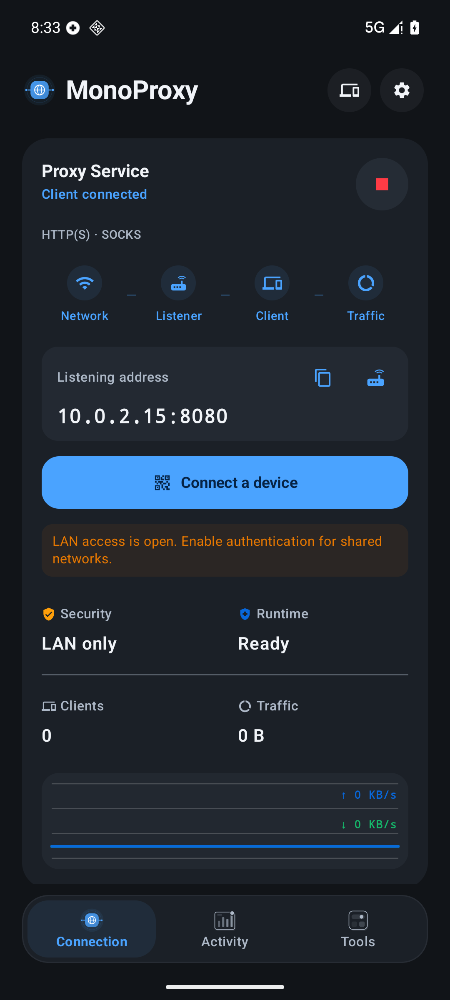
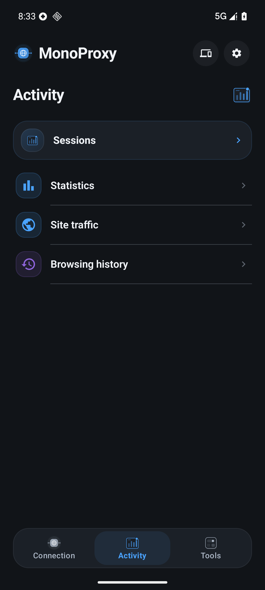
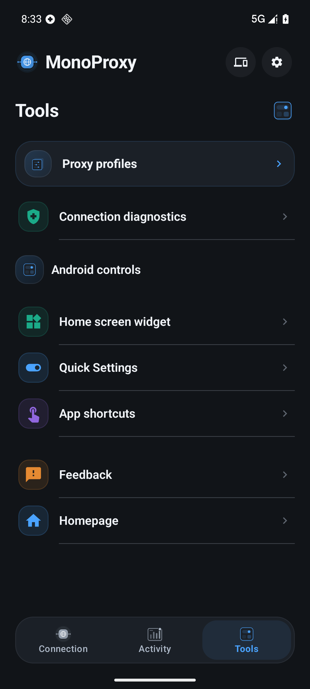
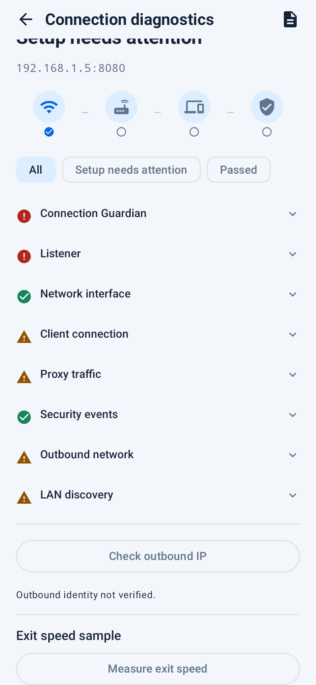

Session analysis
Search and filter sessions by protocol or result, inspect failure stages, and explore a captured analysis snapshot.
MonoProxy for Android shares a single local HTTP, HTTPS CONNECT and SOCKS endpoint with nearby devices, then shows whether the network, listener, client and real traffic path are actually working.
1.6 interface preview · Available after Google Play review


The 1.6 update brings a more focused connection screen, searchable sessions, portable profiles and full-screen diagnostics. The images preview the new interface; Google Play availability follows release review.
Search and filter sessions by protocol or result, inspect failure stages, and explore a captured analysis snapshot.
Preview imports, duplicate without credentials, and exchange compatible server profiles between Android and iOS.
Copy or share HTTP, SOCKS, PAC, QR and command formats. Including credentials always requires confirmation.
Inspect the selected exit and optionally run one consented 1 MiB speed sample. No measurement runs automatically.
The Android flow is designed for the real support problem: users need to know which address to use, where to paste it, and whether traffic really passed through the phone.
Pick the reachable local interface, not a cellular or system address clients cannot see.
Use the full-screen flow for Android, iOS, macOS or Windows client setup.
The wave chart and status blocks update only after real client activity reaches the proxy path.

Run MonoProxy once, then point nearby laptops, desktops, tablets and test devices at the phone's local endpoint.
MonoProxy does not create a device-wide VPN. It binds proxy upstream sockets to the selected Android network, so client traffic can exit through default routing, Wi-Fi, cellular or an already-active VPN network. Useful when only the phone has the desired VPN route.
Follow Android's current default network for normal proxy use.
Send proxy upstream traffic through the active VPN Network when available.
Prefer a Wi-Fi network for stable LAN and internet access.
Route upstream requests through mobile data when that is the intended exit.
Preview of the 1.6 interface. The connection, activity and tools screens are captures of the signed app on an emulator; the diagnostic view is a native render with sample data.
Read or copy the selected address, follow Network → Listener → Client → Traffic, and connect a device from the main screen.
Open sessions, traffic totals and local history from one activity workspace. Filter results and inspect captured session analysis.
Follow the connection path, inspect resource counters, preview a privacy-safe report and choose optional exit checks.

Keep server profiles, client controls, configuration sharing, the activity journal and Android background controls within reach.
MonoProxy for Android runs on the phone without accounts, subscriptions or in-app unlocks. It relays client connections and keeps operational data local to the device.
Use username and password protection for HTTP and SOCKS5 clients on shared networks.
Private clients only is the default posture, with allow and block controls for stronger policy.
HTTPS CONNECT traffic is tunneled without certificate installation or content inspection.
Profiles, device policies and traffic records stay on your phone. Optional exit IP and speed checks contact ipify and Cloudflare only after confirmation.
Buy once on Google Play, start the listener, connect nearby devices and verify real traffic from the phone.